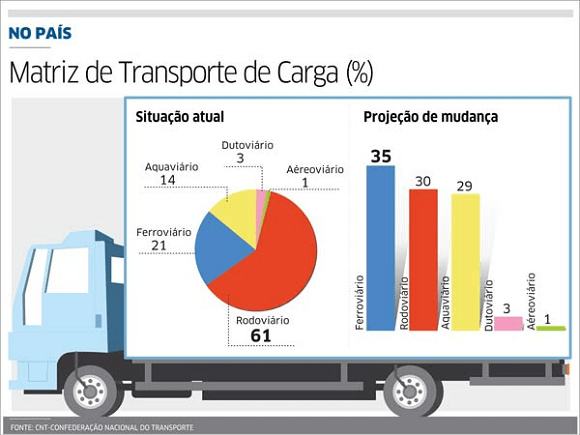
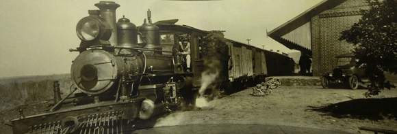
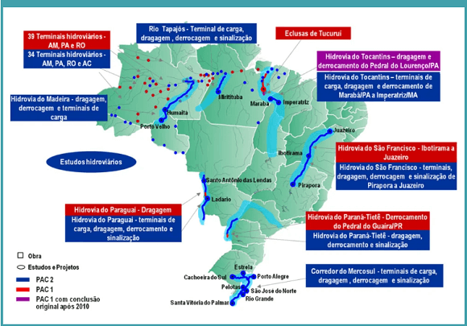

Conteúdo: Meios de transportes; rodoviário; ferroviário; hidroviário e aéreo.
Objetivo: Analisar o papel do sistema de transporte no Brasil. Compreender sua evolução,
importância, comparar os meios de transportes em termos de eficiência, problemáticas do espaço de circulação
no país.
Digite seu nome
Introdução
Na aula passada, vimos os fatores para a concentração e desconcentração
industrial nas regiões brasileiras.
Hoje, veremos os principais meios de transporte como o rodoviário, ferroviário, hidroviário e aéreo.
O desenvolvimento tecnológico é essencial para o crescimento dos setores de transportes. No Brasil, esse
processo se intensificou a partir dos anos 1990.
Questões para serem respondidas no caderno sobre o tema da aula de hoje:
1. Quais foram os fatores históricos que impulsionaram o desenvolvimento do transporte rodoviário no Brasil, e quais foram os principais marcos desse desenvolvimento?
2. Como a criação do Departamento Nacional de Infraestrutura de Transportes (DNIT) em 2002 influenciou o desenvolvimento das rodovias e ferrovias no Brasil?
3. Quais foram as principais consequências ambientais e sociais do projeto da Rodovia Transamazônica (BR-230)?
4. Explique a importância da malha ferroviária para a economia brasileira no final do século XIX e início do século XX, e os motivos para seu declínio após a crise da cafeicultura.
5. Como a privatização das ferrovias brasileiras entre 1996 e 1998 mudou a administração e operação desse meio de transporte?
6. Quais são as características e funções dos corredores de exportação no sistema hidroviário brasileiro, e quais portos principais desempenham esse papel?
7. De que maneira o transporte aéreo no Brasil contribui para o deslocamento de cargas e passageiros, e quais são os desafios enfrentados por esse setor?
8. Como a mudança da capital federal para Brasília influenciou o desenvolvimento do sistema rodoviário brasileiro?
9. Quais foram as razões para a extinção do Departamento Nacional de Estradas de Rodagem (DNER) e como suas funções foram redistribuídas?
10. Como a infraestrutura de transportes no Brasil se compara com a de países ricos, e quais são os principais desafios enfrentados pelos países emergentes e periféricos nessa área?
A evolução dos meios de transporte
O transporte tem como finalidade o deslocamento de mercadorias e pessoas entre cidades, regiões (Estados ou
municípios) e países, difundindo também a cultura entre os povos.
Nos países emergentes e periféricos, a rede de transportes não é tão evoluída quanto nos países ricos, que
colocam essa infraestrutura a serviço das relações econômicas internas e externas, com alto grau de
eficiência nas diversas modalidades de transporte.
Nos países subdesenvolvidos, basicamente exportadores de matérias-primas, essa expansão é organizada para a
economia externa, viabilizando transporte próximo aos portos.
Tipos de transporte no Brasil
No Brasil, o setor de transportes experimentou o grande crescimento na segunda metade do século XX. Esse
fato contribuiu para a integração do território nacional em especial nas regiões Norte e Centro-Oeste,
tradicionalmente isoladas dos polos econômicos e comerciais do Sudeste.
Mas foi um crescimento desigual, impulsionado pelas rodovias, enquanto o setor ferroviário conhecia uma longa
decadência. Para favorecer um desenvolvimento mais equilibrado dos diferentes segmentos, criou em 2002
Departamento Nacional de Infraestrutura de Transportes (DNIT), encarregado de construir, conservar e
fiscalizar rodovias, ferrovias e o transporte marítimo. a figura abaixo há um resumo sobre a matriz de
transporte no país.

Transporte rodoviário
O transporte rodoviário no Brasil teve seu primeiro grande incentivo na época do presidente Washington Luís
(1926-1930), que tinha como lema político “governar é abrir estradas”. Em seu governo foi inaugurada a
ligação rodoviária entre o Rio de Janeiro e São Paulo, principais cidades do país.
Em 1945, surgiu o Departamento Nacional de Estradas de Rodagem (DNER), autarquia encarregada da implantação,
conservação e fiscalização da malha rodoviária.
Na década seguinte, no governo Juscelino Kubitschek, enquanto muitas montadoras automobilísticas se
instalaram no Brasil, o sistema rodoviário consolidou-se como principal meio de transporte.
Sua hegemonia foi impulsionada pelas indústrias automobilísticas, devido a facilidade do acesso às
matérias-primas, à energia e aos mercados consumidores.
Todos esses itens foram importantes para iniciar uma política rodoviária que atende aos interesses dos
empresários do setor, bem como às expectativas de uma parcela cada vez maior de brasileiros que há muito
sonhava com carro próprio.
Além da instalação das montadoras, outro marco do governo Kubitschek foi a mudança da capital federal para o
Centro-Oeste. A integração regional brasileira ocorreu com maior intensidade após a construção de Brasília,
que necessitava de uma ligação com as demais regiões do país.
Iniciou-se desse modo a abertura de várias rodovias federais como a BR-040 ligando Brasília, Belo Horizonte E
Rio de Janeiro; a BR-050 ligando Brasília, Uberaba, Ribeirão Preto, São Paulo e Santos; a BR-153, que liga
Belém a Brasília e muitas outras.
Outro grande projeto rodoviário lançado durante o regime militar foi a Rodovia Transamazônica (BR-230).
Inaugurada em 1972, a estrada foi concebida para acelerar a integração econômica na Amazônia e no norte do
país.
Esse projeto fracassou; além dos impactos ambientais provocados pelo desmatamento e pelo garimpo
descontrolados, contribuiu para as invasões das terras indígenas dessa região.
Muitos colonos transplantados para as vilas agrícolas construídas junto à rodovia tiveram de abandoná-las na
tentativa de fugir da miséria.
Três décadas depois, segundo dados do Ministério dos transportes em 2004, a malha rodoviária estendia-se por
cerca de 1,4 milhão de km, dos quais menos de 197 mil km eram pavimentados.
Com a política de privatizações desenvolvidas no Brasil, muitas rodovias federais e estaduais passaram ao
controle de empresários. Foi o caso da rodovia Dutra (Rio-São Paulo), federal, atualmente conhecida como
Nova Dutra, e das rodovias Anchieta-Imigrantes, antes ligadas ao governo paulista e que hoje integram o
sistema Ecovias.
Mesmo com essas mudanças de gestão, da extinção do DNER e da transferência e suas funções ao DNIT, muitas
rodovias brasileiras concentradas no Centro-Sul e no litoral, ainda estão aquém dos padrões ideais de
conservação e fiscalização.
Transporte Ferroviário
A implantação da malha ferroviária brasileira teve início efetivo com a expansão das lavouras de café por
terras paulistas, na segunda metade do século XIX. O auge da expansão das ferrovias ocorreu entre as décadas
de 1870 e 1920, quando foram construídos quase 28 mil km de trilhos que facilitavam o transporte do café
para os portos de embarque.
Com a crise da cafeicultura, no final dos anos 1920, a malha ferroviária perdeu espaço para as rodovias. Com
esse declínio e a falta de evolução tecnológica diante das indústrias automobilísticas, as ferrovias não
integraram a regionalização brasileira, acelerada na segunda metade do século.
Iniciativas como a criação da Rede Ferroviária Federal S/A (RFFSA) pelo Governo Federal em 1957, e da
Ferrovia Paulista (Fepasa) pelo governo de São Paulo em 1971, não conseguiram reverter essa tendência.
Entre 1996 e 1998 foi empreendida a privatização das ferrovias brasileiras. Em 1999, a RFFSA e a Fepasa foram
extintas. Hoje, o DNIT é responsável por apenas 1% dos cerca de 30.000 km da malha ferroviária brasileira.
Todo o restante está concedido à iniciativa privada sobre responsabilidade da Agência Nacional de Transportes
Terrestres (ANTT), que tem entre suas atribuições fiscalizar e regular as concessionárias.

Estrada de ferro Santos-Jundiaí. Fonte:
https://www.cidadeecultura.com
Transporte hidroviário
Os transportes hidroviários, que podem ser classificados como marítimos ou fluviais, são utilizados
basicamente para movimentação de mercadorias importadas ao mercado externo.
Desde a década de 1990, a extensa orla marinha brasileira possibilitou o estabelecimento de
corredores de exportação, também conhecidos como polos exportadores. Tornou-se cada vez
mais frequente o arrendamento das operações de instalações, principalmente nos terminais de
contêineres, que vêm sendo controlados por empresas privadas nacionais e estrangeiras.
Os corredores de exportação integram o sistema intermodal de transporte no Brasil. Além de contarem com uma
infraestrutura adequada e com boas condições de armazenamento e comercialização, acham-se integrados aos
locais de origem dos produtos exportados. Os portos de Santos, Rio de Janeiro, Recife, Salvador, Paranaguá e
Vitória, entre outros, já atuam como corredores de exportação.
A competência desses corredores e o avanço tecnológico evitam prejuízos, aumentam a competitividade e
reduzem custos, contribuindo para ampliar os negócios e, consequentemente, aumentar o PIB brasileiro.

Transporte aéreo
O transporte aéreo no Brasil é caracterizado pelos altos custos no deslocamento de cargas e de passageiros.
No ano de 2018, as empresas aéreas brasileiras transportaram pouco mais de 103 milhões de passageiros pagos
em voos domésticos e internacionais. O Brasil tem 99 aeroportos, sendo 18 internacionais e 81 para voos
regionais. Todas as companhias aéreas do país são administradas pela empresa brasileira de infraestrutura
aeroportuária (Infraero) estatal ligada ao Ministério da Defesa, cabendo à Agência Nacional de Aviação Civil
(ANAC), o controle dos aeroportos e de outros aspectos do transporte aéreo
Teste seu conhecimento
As ferrovias no Brasil estão geograficamente concentradas na(o):
Teste seu conhecimento
O Brasil necessita de transporte interligados, devido à:
Teste seu conhecimento
Os corredores de exportação podem ser definidos como:
Não existe pergunta boba! A Ciência é feita de perguntas!
P:
Quais fatores são responsáveis pela decadência do transporte ferroviário no Brasil?
R:
A decadência do transporte ferroviária resultou de vários fatores: falta de investimentos, material rodante
obsoleto, administração ineficiente, morosidade no serviço e, principalmente, a concorrência com o ramo
rodoviário.
P:
Quais os principais problemas do transporte urbano do Brasil?
R:
Em razão dos baixos investimentos públicos, existe um descompasso entre a demanda e a oferta de coletivos
urbanos. Entre as consequências dessa situação estão o aumento do transporte informal ou clandestino
(peruas, ônibus), a excessiva utilização de veículos particulares, os congestionamentos, o aumento da
poluição sonora e atmosférica nas cidades.
P:
Quais os principais problemas do transporte marítimo no país?
R:
Um dos principais problemas estão relacionados ao envelhecimento da frota mercante, a deterioração da
infraestrutura portuária, a concorrência crescente das rodovias e os altos custos da movimentação de cargas,
que afastam do padrão internacional os terminais portuários brasileiros.
Desafio - Jornada do herói: Provação
Na aula passada, chegamos na Aproximação da Caverna Oculta, isto é, o ponto culminante em que o herói irá enfrentar sua provação.
Hoje, vamos passar por essa Provação, o aposento mais profundo da Caverna Oculta, o maior desafio e o adversário mais terrível que teremos de enfrentar.
Como sempre, formem seus grupos e use a criatividade para lidar com esse desafio.
Instruções
Forme um grupo com 5-6 estudantes;
Leia o texto abaixo e discuta com seu grupo o conteúdo das questões;
Faça anotações em seu caderno;
Seja criativo, use os conhecimentos que você já possui sobre o Desafio.
Tempo da atividade: 25 minutos.
Provação (8)
Leia a passagem abaixo:
“Eis a hora de completar a Busca, entrar na Caverna Oculta e procurar o que irá restaurar a vida de Nossa Tribo. O caminho fica mais estreito e escuro. Você tem que prosseguir sozinho, rastejando, sentindo a terra fechar-se à sua volta. Mal dá para respirar. De repente, você vai deparar-se com o aposento mais profundo, e se encontrar, frente a frente, com uma figura imensa, uma Sombra ameaçadora, composta de todas as suas dúvidas e medos, e bem armada para defender um tesouro. Aqui, neste exato momento, está a chance de ganhar tudo ou morrer. Não importa o que você veio buscar, agora é a Morte que está tendo que encarar. Qualquer que seja o resultado da batalha, você está a ponto de sentir o gosto da morte e isso vai muda-lo para sempre”.
Morte e renascimento
O segredo mais simples da Provação é este: o herói tem que morrer para poder renascer. Esse é o momento dramático de que a plateia mais gosta, acima de qualquer outro, quando o herói quase morre, seja pelos seus medos, pelo seu fracasso, o fim de uma relação ou a morte metafórica de sua personalidade antiga. Ao passar por este teste principal, o herói será consagrado.
Sherlock Holmes, aparentemente morto pelo professor Moriarty, atirado na cachoeira, desafia a morte e retorna transformado e pronto para novas aventuras. Tudo isso traz mudanças para o herói, que passa a ser mais cooperativo, disposto a controlar seu ego, em benefício do grupo, quem sabe.
A crise
A Provação é um dos principais núcleos nervosos da história. Em God of War Ragnarok é aquele momento em que Kratos se torna o general e com sua equipe parte para atacar Asgard. Em Days Gone representa a passagem pelo ponte com o caminhão bomba em direção ao esconderijo do coronel Garret. É ponto mais tenso da história, uma verdadeira crise se instala e precisa ser resolvida.
A crise é um divisor de águas na Jornada do Herói, que mostra que o viajante alcançou o meio da viagem. É o acontecimento central da história: chegar ao topo da montanha, o ponto mais profundo da caverna, o interior de uma país estrangeiro ou dentro de um mina de carvão (com um carrinho de mina típico dos videogames).
Testemunha do sacrifício
Quando Frodo em, O Senhor dos Anéis, é atacado pela aranha Laracna, Sam foi a testemunha de que o herói havia morrido. Ele chora sua perda e fica eufórico quando descobre que Frodo não está morto. Assim como ocorre com Skywalker, em Star Wars, ao ser engolido pelo compressor de lixo.
Luke é puxado para baixo do esgoto pelo tentáculo de um monstro que não é visto. Foi essa cena que realmente faz entender o que é a Provação. Por um momento, parece que o herói realmente está morto e fortes emoções tomam conta da plateia. Será mesmo que ele morreu? Pouco tempo depois o herói surge vivo, renascido com a ajuda de seus companheiros.
Na Provação o herói também presencia a morte de seus aliados. Como o sacrifício do irmão de Freya em God of War Ragnarok ou a morte de Obi Wan ao lutar com o vilão Darth Vader no clássifico filme Star Wars ou Guerra nas Estrelas.
Encarando a Sombra
A Provação é, por assim dizer, algum tipo de batalha ou confrontação com uma força oposta. Pode ser um inimigo mortal, vilão, adversário ou mesmo uma força da natureza. O arquétipo da Sombra é usado nas narrativas de games ou de filmes, pois sintetiza as possibilidades negativas do próprio herói. A Sombra é uma polarização, um sistema que dá ao herói alguma forma de resistência e cria o conflito da história.
Se o herói quase morre, o vilão certamente pode perecer ou escapar. Geralmente um subalterno do vilão enfrenta o herói e permite que o vilão principal fuja. É bom lembrar que o vilão não se considera como tal, mas sim age como se pretendesse salvar algo, não importa os meios. Por isso que é importante em uma história conta-la a partir do ponto de vista de todos: heróis, vilões, auxiliares, aliados, guardiões e personagens menores.
A Provação, portanto, é o momento em que o herói enfrenta seu maior medo. É quando ele vai ultrapassar os seus limites e mudar. Essa mudança lhe trará uma Recompensa, tema da próxima Jornada.
Questões para pensar na história do jogo:
- Qual é a Provação na sua história? Sua história tem mesmo um vilão? Ou é simplesmente um antagonista?
- De que modo seu herói enfrenta a morte na Provação? Qual é o maior medo de seu herói?
SANTOS, Patrícia Cardoso dos (et al.). Enciclopédia do Estudante: geografia do Brasil:
aspectos físicos, econômicos e sociais. São Paulo: Moderna, 2008.
FRANK, Bruno José Rodrigues. Geografia econômica. Londrina: Editora e Distribuidora
Educacional S.A., 2018.
VESENTINI, José William. Geografia: o mundo em transição. Ensino médio. 2. ed. – São
Paulo: Ática, 2013.
VOGLER, Christopher. A jornada do escritor: estruturas míticas para escritores.
Tradução de
Ana Maria Machado. -
2.ed. Rio de Janeiro: Nova Fronteira, 2006.
SKOLNICK, Evan. Video game storytelling: what every developer needs to know about
narrative
techniques.New Yoirk: Watson-Guptill, 2014.